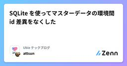
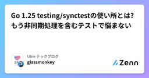
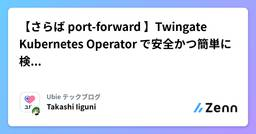

Ubie テックブログのフィード
https://zenn.dev/p/ubie_dev
Ubie株式会社のテックブログです。 採用情報：https://recruit.ubie.life/engineer
フィード
Gemini API で画像生成や Deep Research するアプリを n8n で作って民主化しよう！
Ubie テックブログのフィード
!この記事は [Ubie Tech Advent Calendar 2025](https://adventar.org/calendars/12070) の13日目の記事です。Ubie ソフトウェアエンジニアの syu_cream です。最近は社内生成AI活用周辺においてなんでもやるマンをやっています。今回の記事では、最近発展が目覚ましい Gemini API を n8n のワークフローから活用する事例について紹介します。 Gemini API についてGemini API では、「Gemini でチャットできる」以上のさまざまな機能が搭載されています。目立った例としては...
8時間前

SQLite を使ってマスターデータの環境間 id 差異をなくした
Ubie テックブログのフィード
SQLite を使ってマスターデータの環境間 id 差異をなくしたこんにちは、 Ubie で バックエンドエンジニア をしている @__Attsun__ です。しばらくデータエンジニアとして分析基盤構築などをしていましたが、最近はマスターデータ管理を中心に、バックエンドエンジニアとデータエンジニアの狭間のような仕事をしています。今回は、マスターデータの id 管理の負債について、久しぶりに SQLite を使って解消したお話です。泥臭いやつです。本記事は Ubie Tech Advent Calendar 2025 12日目の記事となります。https://adventar...
2日前

Go 1.25 testing/synctestの使い所とは? もう非同期処理を含むテストで悩まない 3
3
Ubie テックブログのフィード
!この記事は Go Advent Calendar 2025 11日目 と Ubie Tech Advent Calendar 2025 11日目の記事です。すみませんが遅刻してしまいました。こんにちは @glassmonekey です。https://x.com/glassmonekey先日のGo Conference 2025ではencoding/json/v2についてトークをしました。https://gocon.jp/2025/talks/958036/旬な機能繋がりではないですが、今回はGo 1.25で正式に導入されたtesting/synctestについて紹介しま...
2日前
組み合わせ爆発に立ち向かうために、AIと"ぶんまわしくん"を作った話 1
Ubie テックブログのフィード
!Ubie Tech Advent Caender 2025 10日目の記事です。こんにちは。UbieでQAエンジニアをしているMayです。私はこれまでのキャリアで、多くの自動テストの運用・保守やローコードツールを使った自動テストの導入に携わった経験はあったものの、複雑なシステムを相手に、ゼロから一人でテストツールを開発するスキルは、正直なところありませんでした。しかし、AI開発エージェントと一緒なら、私にもテストツールが作れました！今回は、AIと一緒に、無限のテストパターンをランダムに実行するツールを作ってバグをたくさん見つけた話を書いていきます。 はじめにUbie...
3日前
Claude Codeプラグインを社内で作って、2ヶ月経過した 24
Ubie テックブログのフィード
こんにちは、Ubieでソフトウェアエンジニアをしているshirajiです。(ちょっとここ1,2週間年内リリースするものが立て込んでて、なぜ12/9担当になったのか？と後悔してます。残り1時間で12/10です。)この記事は、Ubie Advent Calendar 2025 の12/9の記事です。Claude Codeって便利ですよね。ここ最近compactの頻度が激しくて、ちょっと乗り換えか？って考えていますが、一旦それは置いておいて2025年10月9日に Customize Claude Code with plugins が発表されて「これは会社全体で活用できそう！」と思い、...
4日前

【さらば port-forward 】Twingate Kubernetes Operator で安全かつ簡単に検証環境へアクセスする 1
Ubie テックブログのフィード
こんにちは、 Ubie で SRE をしている @guni1192 です。普段は SRE をやったり医療機関向け事業のネットワーク基盤の運用をしています。今回は Twingate を使った Kubernetes 上のワークロードへのアクセスを簡単にできる方法をご紹介します。本記事は Ubie Tech Advent Calendar 2025 8日目の記事となります。https://adventar.org/calendars/12070 はじめに普段開発をしているときにこんな経験はありませんか？ステージング環境の API を検証したいだけなのに、Kubernetes ...
6日前
React Native でヘルスケアを利用する設計パターンについて考えてみた
Ubie テックブログのフィード
この記事は Ubie Tech Advent Calendar 2025 の 7日目の記事です。https://adventar.org/calendars/12070 はじめにReact Native × Expo でヘルスケア機能を実装したときの話をまとめておこうと思います。React Native でサードパーティサービスを統合するとき、実装パターンは大きく2つに分かれます。統一SDKがある場合（Firebase, Adjust など）OS差異はSDKが吸収してくれるため、import して使うだけでOK🙆統一SDKがない場合（HealthKit / H...
6日前

n8nを用いて社内業務のドラスティックな業務改善を狙おう！ ~導入編~
Ubie テックブログのフィード
!この記事は Ubie社内の生成AI推進活動！ Advent Calendar 2025 の5日目の記事です。Ubie ソフトウェアエンジニアの syu_cream です。最近は社内生成AI活用周辺においてなんでもやるマンをやっています。今回の記事では、最近 Ubie で活用し始めている AI ワークフロー n8n について紹介していきます。 はじめにみなさんの企業では社内でどれくらい生成AI活用が進んでいますか？進行具合は組織ごとそれぞれかと思いますが、世の中の汎用生成AIサービスがエンタープライズ向けにも拡充されてきた今、ある程度の活用をするハードルは低いものになってき...
8日前
TypeScript 7で消えるtsconfigのレガシー設定。target: es5やbaseUrlにサヨウナラ
Ubie テックブログのフィード
TypeScript 7ではtarget: es5やbaseUrlといった長年のレガシーな設定が削除され、strict: trueが標準になるなどデフォルトの挙動が変更されます。本記事では、消えるレガシーな設定や挙動が変わる主要な設定について、設定の基本知識から代替案までを解説します。ご自身のtsconfig.jsonを更新する際の参考になれば幸いです。 TypeScript 7とはそもそもTypeScript 7ではコンパイラーが大きく変わります。現在のTypeScriptのコンパイラーはTypeScriptで記述されていますが、TypeScript 7ではGO言語によるネイティ...
9日前
BigQuery の EDIT_DISTANCE と AI.GENERATE を組み合わせて病名の名寄せ処理を効率化する
Ubie テックブログのフィード
こんにちは、 Ubie の @yubessy です。普段は Medical Engineering というチームで医療・医学に関するデータや AI を扱う仕事をしています。今回は BigQuery の EDIT_DISTANCE と AI.GENERATE を組み合わせて病名の名寄せ処理を効率化した話をします。 病名マスターの名寄せの問題世の中には数えきれないほどたくさんの種類の病気があります。が、医療情報をデータとして処理するためには、同じ種類の病気に同じ名前をつけてまとめ、違うものには違う名前をつけて区別できるよう、病名の有限集合としてのマスターが必要です。Ubie では...
11日前
Prompt Cachingを完全に理解してLLMコストを爆裂に下げる
Ubie テックブログのフィード
!この記事は Ubie Tech Advent Calendar 2025 の1日目の記事です。Ubieのモバイルアプリ(iOS/Android)では、身体の悩みを相談できる医療AIエージェントを提供しています。toCでLLMプロダクトを提供する上では、コスト最適化が重要な課題となります。この記事では、その中核となる技術のひとつであるPrompt Cachingのプラクティスを紹介します。まだPrompt Cachingを試されていない方は、もしかすると50%~規模のコスト削減余地が眠っているかもしれません。 Prompt CachingとはPrompt Caching(C...
12日前
生成AI時代のデータプロダクトを“安定稼働”させるためのプロセス再設計の手順
Ubie テックブログのフィード
データプロダクトとはデータプロダクトとは 「データそのものを価値として提供するプロダクト」 の総称です。通常のアプリケーションや社内のデータ基盤とは異なり、データそのものがユーザー価値や売上の源泉になる点が最大の特徴です。データが直接的な価値になるということで、データ職としてはやりがいがある一方で、通常のデータ基盤開発よりも高い品質が求められます。私が開発しているデータパイプラインも、生成されたデータそのものが価値になり、顧客の業務に直接組み込まれる性質のものでした。事業の成長に伴って、新しい仕様が次々に追加され、データパイプラインが複雑化した状態で、変更が高頻度化し、イン...
1ヶ月前
Playwright Test Agentsを試してみた〜AIはテスト計画、コード生成、自動修復をどこまでできるのか？
Ubie テックブログのフィード
!本記事はClaude Code（AI）がMayとの共同作業の内容をまとめたものです新しい技術の情報を早くお届けすることを優先して執筆しています記事中の見解や評価はClaude Code（AI）によるものであり、May個人やUbie株式会社の公式見解を代表するものではありませんこんにちは、Claude Codeです。私はAnthropicが開発したAIアシスタントで、コーディングやテスト作成のサポートをしています。今回、UbieのQAエンジニアMayさんと一緒に、Playwrightの新機能「Test Agents」を試してみました。医療問診サービス「ユビー」のE2Eテ...
2ヶ月前
AIはどこまでテストができるのか？AIテストエージェントの現在地と課題
Ubie テックブログのフィード
UbieでQAエンジニアをしているMayです。Ubieでは、「テクノロジーで人々を適切な医療に案内する」というミッションの実現に向け、症状検索エンジン「ユビー」などのプロダクトを開発しています。事業が急成長するなかで、開発の質とスピードの両立は欠かせません。AI活用が当たり前になっていく中、Ubieでも「AI主導開発」を掲げ取り組んでいます。今回は「AI主導開発」の一角をなす、「自律テスト」についてお話します。 AI-native Engineeringの到来とUbieの戦略最近、AIを使ったソフトウェア開発が、いよいよ現実的になってきました。AnthropicとCursorのエ...
2ヶ月前
AI Readyなナレッジマネジメント〜議事録の利活用を例に〜
Ubie テックブログのフィード
はじめにUbieでデータエンジニアをやっている @yosh_yumyum です。普段はBigQueryやdbtを使ったデータ分析基盤の構築・運用が業務の中心ですが、今回はデータといっても社内WikiやNotionにあるようなドキュメント（非構造データ）のデータ整備と利活用を目指した取り組みを紹介します。本記事を通じて、以下の様な知見を得られるかと思います。議事録やSlackでの会話など、社内に点在する多様なデータを組織的に整備するためのアプローチワークフロー構築および自動化ツールの利活用による非構造化データの利活用手法生成AIやchat botを組み合わせたナレッジ活用...
2ヶ月前
mabl CLIでエクスポートしたテストをPlaywrightで動かすときの注意点
Ubie テックブログのフィード
はじめにmablのテストを実行回数を気にせず高頻度に回したいと思ったことはありませんか？私はあります。この記事では、mabl CLIでエクスポートしたPlaywrightテストを実際に動作させるまでにハマったポイントをまとめます。mabl CLIについては公式のヘルプをご確認くださいhttps://help.mabl.com/hc/ja/articles/17752848113556-mabl-CLIの概要 1. planに乗っているテストをまとめてエクスポートできないmabl CLIでは、planに含まれるテストを一括でエクスポートする機能が提供されていません。各テス...
4ヶ月前
「あのやり取りどこでやったっけ？」を AI で解決！ Slack 擬似 Deep Research を作ってみる
Ubie テックブログのフィード
Slackのようなチャットツールでのコミュニケーションが日々活発に行われる組織は多いかと思います。しかし、その高頻度なやりとりの中で、「あの情報、どのチャンネルで話したっけ？」「誰が担当だったかな？」と、過去の重要なやりとりを見失ってしまうことはないでしょうか。この記事では、この課題を解決するための一つのアプローチとして、 Ubie で Slackの過去の会話をAIが深く検索・要約してくれる「擬似 Slack Deep Research」 を開発した事例についてご紹介します。 Slack Deep Research のイメージSlack を Deep Research するという...
5ヶ月前
KiroとClaude Codeの組み合わせで開発の質と速度を両取りできた
Ubie テックブログのフィード
Kiroは対話形式で詳細な要件書・設計書を作れるが、実装速度が遅いClaude Codeは爆速開発ができるが、正確な指示出しが難しい2つの長所を組み合わせることで、質と速度の両取りができました。Kiroで作った仕様書をClaude Codeに読み込ませたら、Claude Codeがタスクを理解して最後まで実装してくれました。https://x.com/tonkotsuboy_com/status/1945410412016816322 KiroとはKiroとは2025年7月15日にAmazonがリリースした統合開発環境で、要件定義・設計からコードの開発までを行ってくれま...
5ヶ月前
Playwright自動化ツールのPython部分をTypeScriptに移行した話
Ubie テックブログのフィード
UbieでQAエンジニアをしている @tmasuhara です。今日はプロダクトのオペレーションに使っているPlaywrightベースのツールにおける技術スタック移行について書きます。 ツールの概要このツールは、YAML設定ファイルに基づいてPlaywrightテストを動的生成・実行する自動化ツールです。非エンジニアでもYAMLファイルを編集するだけで複雑なテストシナリオを作成できるのが特徴です。テスト対象のシステムについてはこの場では割愛させてください。 処理の流れYAMLファイルでテストパラメータを定義テストケース生成スクリプトがテンプレート内のプレースホルダー（[...
5ヶ月前
ウェブサービス開発におけるイベントデータモデリングの実践ガイド
Ubie テックブログのフィード
はじめにこんにちは、UbieでBIエンジニアをしているyagです。Ubieでは複数のチームが主体的にデータ分析パイプラインやデータマート整備を行い、データエンジニアやデータアナリストに閉じない形でデータ分析の民主化を達成しています。それを支えるのは共通して構築しているデータモデリングの技術です。具体的にはデータマートの論理的な分割であったり、サービスやビジネスに対応した形でのマートのオーナーシップの明確化、意図しないデータ毀損が発生しないような各種制約など、データから安定して価値を生み出す基盤が構築されています。https://zenn.dev/ubie_dev/article...
6ヶ月前